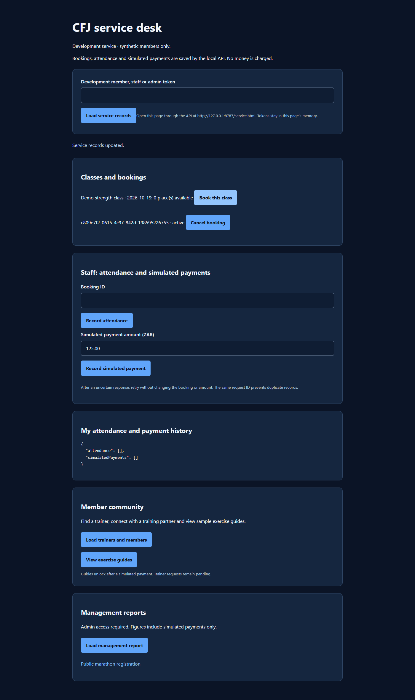
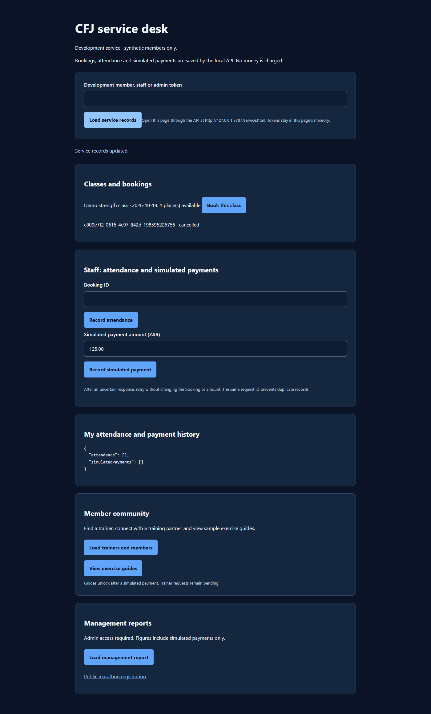

Developer evidence · 19 October 2026
PASS: browser booking, independent API read, API cancellation, browser refresh showing cancellation.
44 web/API tests passed. Android booking controls added; see the separate build log for the build result.
This run uses isolated file storage and development tokens. It does not prove Android physical-device operation, hosted Oracle or production authentication.
Pull request #3 is open on feature/team-and-app-setup. TshifhiwaThamagane is requested as reviewer. No reviews submitted at the recorded check.
Evidence source: GitHub connector response in review-status.json. This is a rendered evidence report, not a GitHub screenshot.
Remaining: actual teammate review, individual contributions and assigned meeting/progress records.

